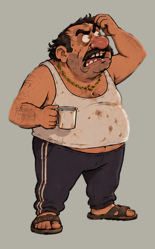

Skutečné lokální generování. Porovnej původní kresbu, přenos pohybu a
pohyb z textu.

Referenční obrázekStejný vstup pro obě varianty.
Podle kresleného videaKostra pohybu z nové
předlohy, zarovnaná na Fera.
První volné gesto z promptuŽivější pohyb z
oblíbeného prvního pokusu. Vzhled se postupně mění.
Prompt + ukotvený začátekPůvodní obrázek tvoří také
začátek klipu. Pohyb je stále volnější než zadání.
Jde o generativní RGB výstupy. Kresba se může měnit; pro herní sprite je
potřeba vybrat vhodný pohyb, připravit průhlednost a smyčku. Předchozí
pokus s živým hercem je zde.